Participant 1
Initial description: The rule to transform the inputs was to copy the grid layout inside of the blue rows and change the colors of the light blue squares into whatever color was in the corner of each quadrant.
Final description: The rule to transform the inputs was to copy the grid layout inside of the blue rows and change the colors of the light blue squares into whatever color was in the corner of each quadrant.

Participant 2
Initial description: The inside of the square that is surrounded by dark blue is the new size of the test output. the pattern inside this is black is always black, but the color of the light blue is corresponding to the color of which side it is located on.
Final description: The inside of the square that is surrounded by dark blue is the new size of the test output. the pattern inside this is black is always black, but the color of the light blue is corresponding to the color of which side it is located on.

Participant 3
Initial description: To fill the entire inside square with the light blue color.
Final description: To fill the inner square light blue. And then extend the colors of the squares on the outside in a clockwise pattern.
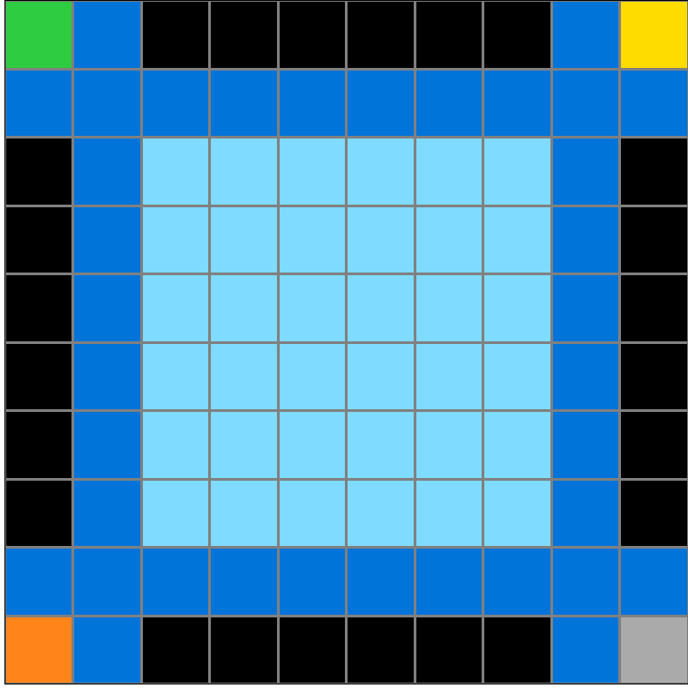
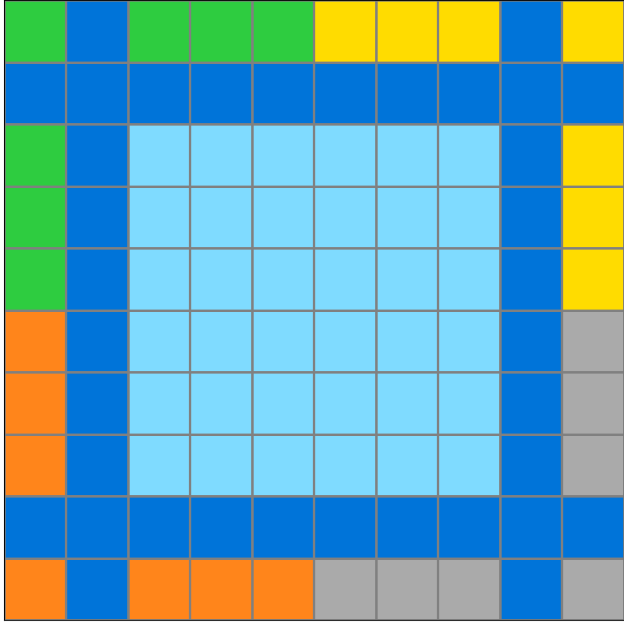
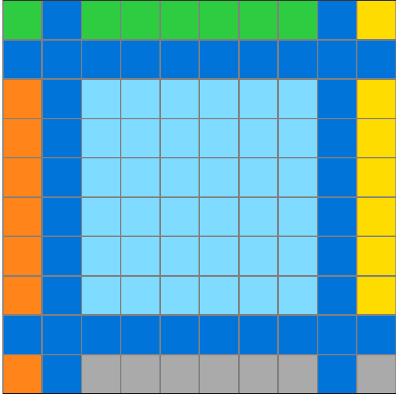
Participant 4
Initial description: Match the output grid to match the width and height of the internal light blue squares and match up their color with input 1.
Final description: To match up the block colors with the colors in the corners of the input grid as shown in example input 1.
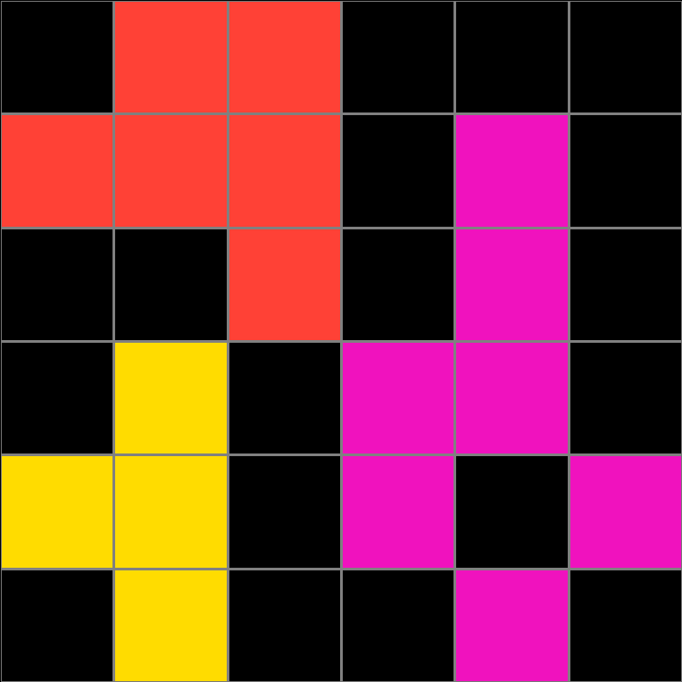
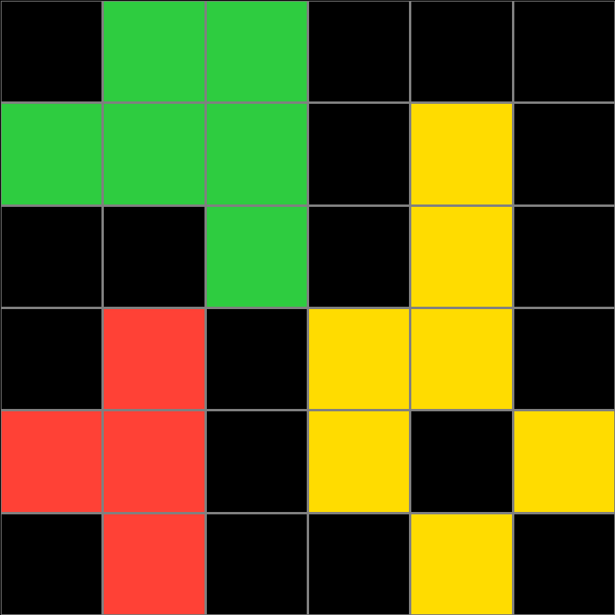
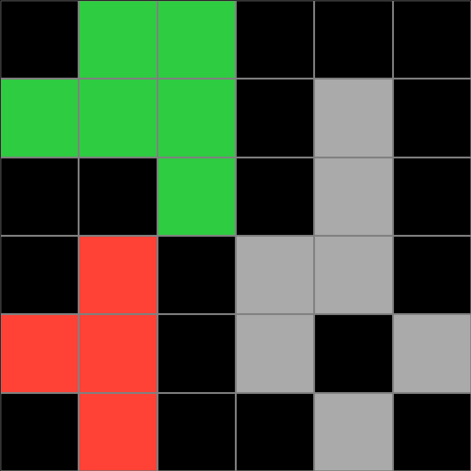
Participant 5
Initial description: Recreate only the center grid, and within it change the colored squares to match the corner colors from the original larger grid.
Final description: Recreate only the center grid, and within it change the colored squares to match the corner colors from the original larger grid.

Participant 6
Initial description: Divide up the area within the dark blue borders into a 2x2 grid and use the colors of each pixel in the respective corner to fill in the light blue dots of that part of the 2x2 grid.
Final description: Divide up the area within the dark blue borders into a 2x2 grid and use the colors of each pixel in the respective corner to fill in the light blue dots of that part of the 2x2 grid.

Participant 7
Initial description: Copy the middle of the grid, in-between the dark blue lines. Color the light blue of each quadrant of the grid the same color as the corners in of the input.
Final description: Copy the middle of the grid, in-between the dark blue lines. Color the light blue of each quadrant of the grid the same color as the corners in of the input.
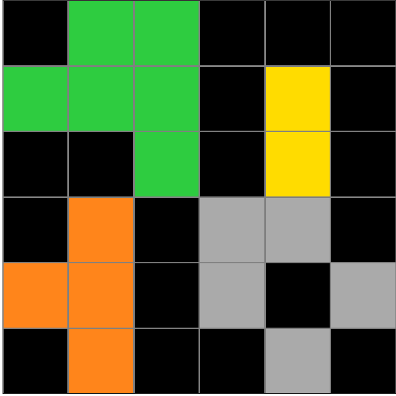
Participant 8
Initial description: The output grid needs to be the same size as the center shape within the dark blue lines in the input. Divide this original shape into four sections. Each section needs to be recreated, but color changed to match the color in that corner of the input.
Final description: Recreate only the center shape of the input, within the dark blue lines. Recolor each quadrant of this shape using the color of the single block in that corner of the input.
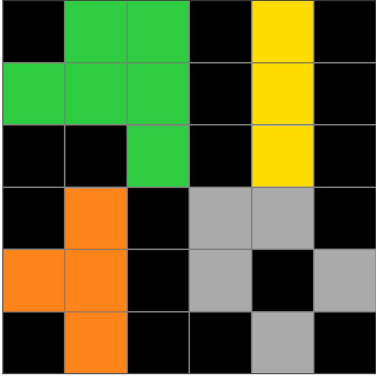

Participant 9
Initial description: none
Final description: bad
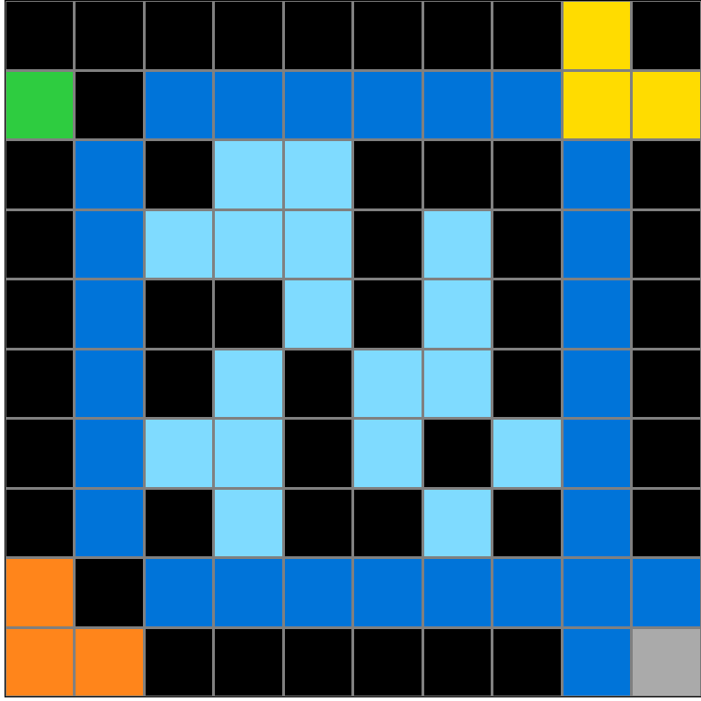
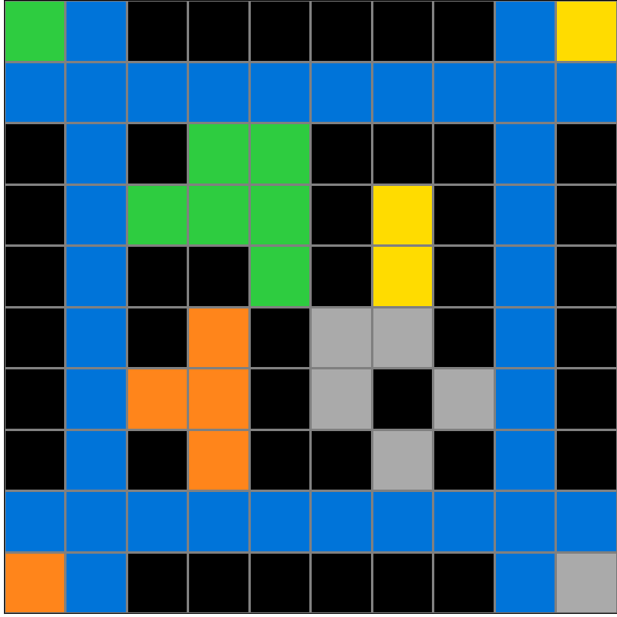
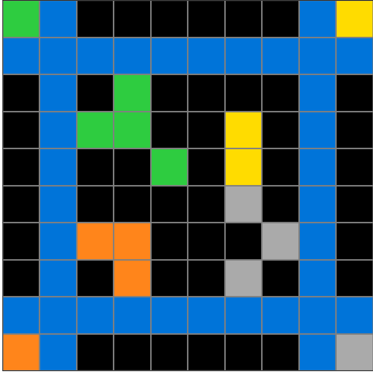